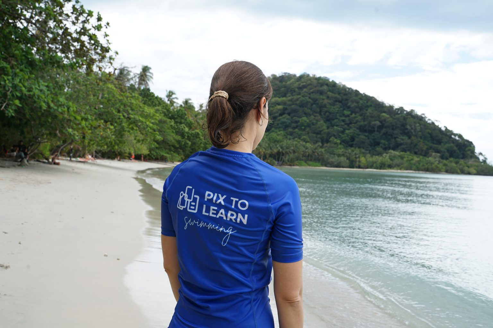

The pool overloads speech
Noise, echoes, movement, temperature and other swimmers compete for attention. Multi-step verbal instructions often disappear before action.
Module 1 of 4 | about 10-12 minutes
1. Open
Use this today: before your next lesson, pick one skill and one visual cue. Do not add a full wall of cards yet.
2. See it
Watch how a clear visual stays available while the learner practises. Notice what the instructor is not doing: long verbal chains mid-movement.
Tip: watch once for the teaching moment, then once for the learner response.

3. Get it
Keep these three points. Everything else in this course builds on them.
Noise, echoes, movement, temperature and other swimmers compete for attention. Multi-step verbal instructions often disappear before action.
A sequence or cue card gives learners something stable to refer to while they try the skill, without needing perfect auditory memory.
One skill sequence or one transition routine is enough on day one. Add cards only when they reduce confusion, not for decoration.
4. Try it
Tap a challenge on the left, then tap the best visual support on the right.
5. Case it

A child freezes after you explain a three-step float sequence verbally. The pool is busy. Your waterproof cards are on the stand beside you.
What is the strongest next move?
6. Take it
Tick what you will prepare before your next swim session. Two or more is enough to make this module useful.
0 of 4 ready for your next session.
 Apply with PixtoLearn Swimming Packs
Waterproof cards turn this method into a repeatable poolside system.
Apply with PixtoLearn Swimming Packs
Waterproof cards turn this method into a repeatable poolside system.
7. Check
Answer correctly to unlock Module 2.
Why can visual supports help in a busy pool environment?